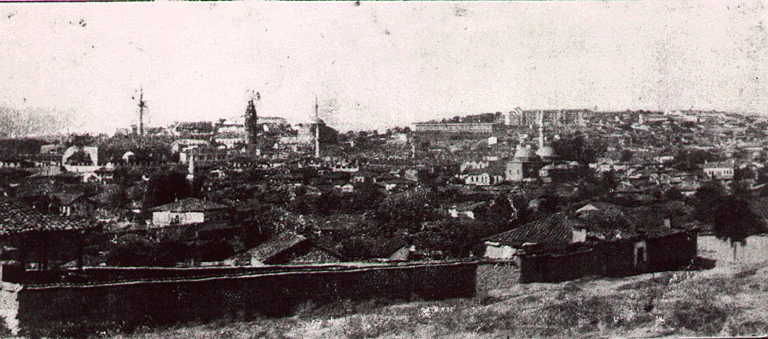
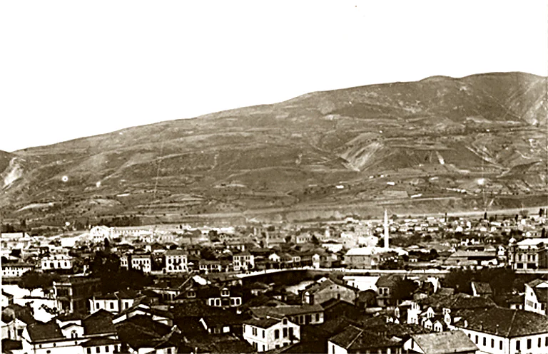
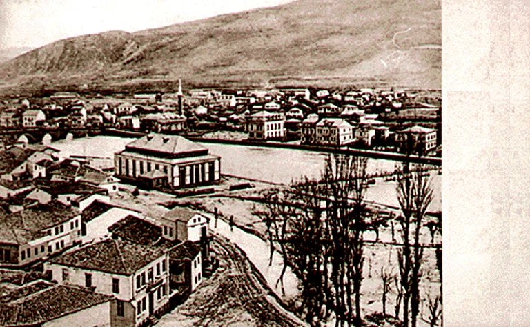
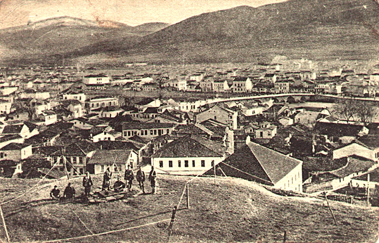
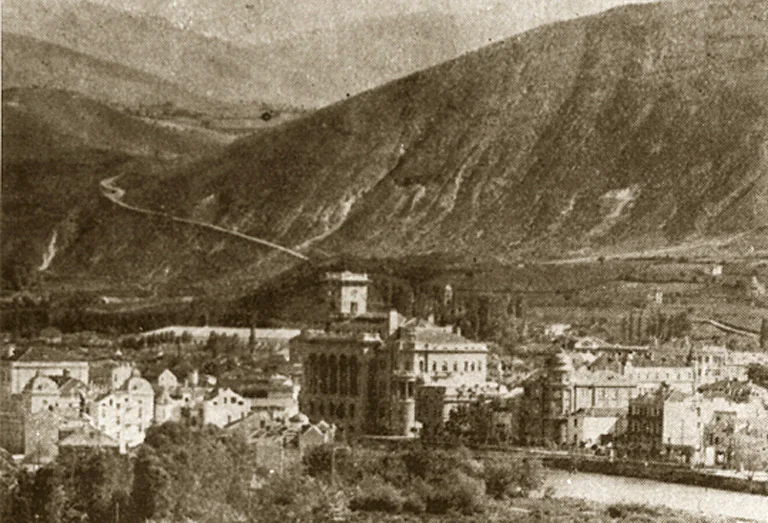
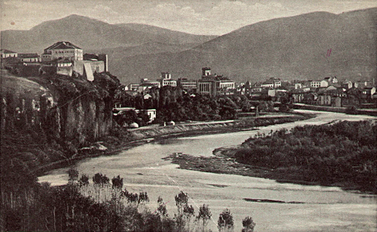
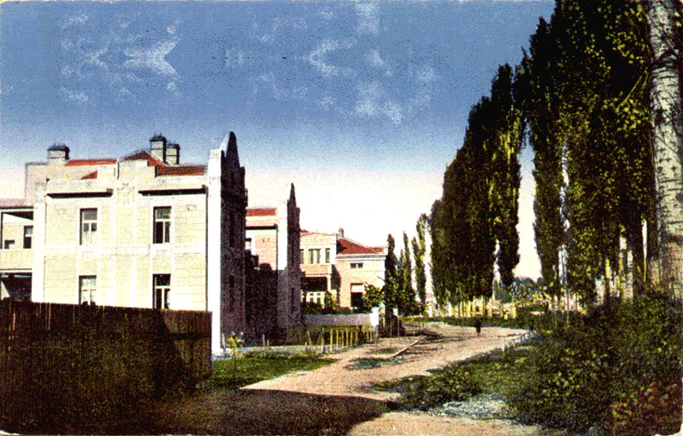
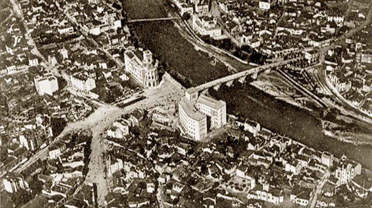
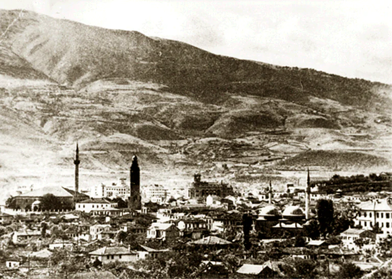
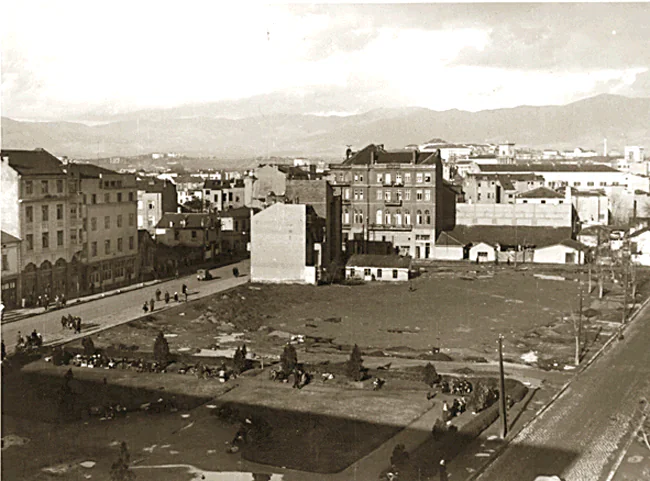

Σκόπια 1916 - 1917 πανόραμα 2
Έγγραφα από τους Βαλκανικούς πολέμους
- Έτος
- 1916-1917
- Διάρκεια
- 00:12

Τα Σκόπια στα τέλη του 19ου αιώνα. Θέα των αδόμητων χώρων της νέας συνοικίας στη δεξιά όχθη του Βαρδάρη. Στο βάθος φαίνεται το φρούριο της πόλης - Καλέ. Στο δεξί μέρος ο λόφος Γαζή Μπαμπά.

Τέλη του 19ου αιώνα. Οι αδόμητοι χώροι στη δεξιά όχθη του Βαρδάρη. Μόνο λίγα σπίτια ακριβώς δίπλα στον ποταμό. Στο βάθος υψώνεται το φρούριο των Σκοπίων - Καλέ.

Σκόπια 1888, φωτογραφημένα από τον λόφο Γαζή Μπαμπά προς το φρούριο των Σκοπίων - Καλέ.

Θέα της πόλης από τον Πύργο του Ρολογιού προς το βόρειο τμήμα των Σκοπίων με τις παλιές τουρκικές και μακεδονικές συνοικίες. Στο βάθος ο λόφος Γαζή Μπαμπά. (τέλη του 19ου αιώνα)

Σκόπια - θέα του παλιού τμήματος με την παλιά αγορά. Στο βάθος φαίνεται το Τζαμί του Μουσταφά Πασά, και δεξιά του το φρούριο των Σκοπίων - Καλέ με τους στρατώνες. Στο πρώτο πλάνο φαίνονται κατοικίες στη συνοικία Γαζή Μπαμπά - τέλη του 19ου αιώνα.

Σκόπια, αρχές του 20ού αιώνα. Θέα από τον Πύργο του Ρολογιού προς το παλιό δημόσιο, εμπορικό και βιοτεχνικό κέντρο, με τον χώρο της αγοράς. Νέες αρχιτεκτονικές μορφές στην παλιά αστική δομή. Στο βάθος δεσπόζουν το Τζαμί του Μουσταφά Πασά και το φρούριο με τους στρατώνες. Από κάτω το Τζαμί του Πασά Γιγίτ Μπέη, το παλαιότερο τζαμί των Σκοπίων (δεν σώζεται σήμερα).

Θέα από το φρούριο των Σκοπίων - Καλέ προς το όρος Βόντνο. Ακριβώς κάτω από το Καλέ η εβραϊκή συνοικία. Φαίνονται ο Βαρδάρης και η Πέτρινη γέφυρα. Ακριβώς δίπλα της το Τζαμί Μπουρμαλί
- αρχές του 20ού αιώνα.

Θέα από το φρούριο των Σκοπίων - Καλέ προς το όρος Βόντνο. Ακριβώς κάτω από το Καλέ η εβραϊκή συνοικία. Φαίνονται ο Βαρδάρης και η Πέτρινη γέφυρα. Ακριβώς δίπλα της το Τζαμί Μπουρμαλί
- αρχές του 20ού αιώνα.

Θέα της εβραϊκής συνοικίας και της πόλης από το φρούριο των Σκοπίων - Καλέ. Στο πρώτο πλάνο η συναγωγή (χωρίς στέγη). Δεξιά η Πέτρινη γέφυρα - αρχές του 20ού αιώνα.

Θέα από το φρούριο των Σκοπίων - Καλέ προς την Πέτρινη γέφυρα και το Τζαμί Μπουρμαλί. Σε αυτή τη φωτογραφία είναι ενδιαφέρον να προσέξει κανείς πόσο λίγο είχε απλωθεί η πόλη στη δεξιά όχθη του Βαρδάρη. Η φωτογραφία τραβήχτηκε στα τέλη του 19ου αιώνα. Μακριά στο βάθος φαίνεται η ζυθοποιία, ή όπως την έλεγαν τότε η «Μπιραρία». Στο πρώτο πλάνο τμήμα της εβραϊκής συνοικίας.

Πανοραμική απεικόνιση της κεντρικής περιοχής της πόλης από τα τέλη του 19ου αιώνα. Στη μέση το τουρκικό θέατρο. Στη δεξιά όχθη του Βαρδάρη, ακριβώς δίπλα στην Πέτρινη γέφυρα, φαίνεται το Τζαμί Μπουρμαλί.

Η φωτογραφία τραβήχτηκε από τα τείχη του φρουρίου των Σκοπίων - Καλέ, πριν από τον Α΄ Παγκόσμιο Πόλεμο. Στους πρόποδες κατοικίες της εβραϊκής συνοικίας, το σχολείο και η συναγωγή. Αριστερά η εκκλησία του Αγίου Δημητρίου.

Πανοραμική λήψη από το φρούριο των Σκοπίων - Καλέ στις αρχές του 20ού αιώνα. Στο πρώτο πλάνο μερικοί στρατιώτες από τον χώρο του στρατώνα. Στους πρόποδες φαίνονται σπίτια της εβραϊκής συνοικίας και του Πάικο, έπειτα η Πέτρινη γέφυρα και ακριβώς δίπλα της το Τζαμί Μπουρμαλί. Πιο πέρα συνεχίζει το νέο τμήμα των Σκοπίων, και στο βάθος διακρίνεται η ζυθοποιία.

Θέα από το φρούριο των Σκοπίων - Καλέ προς τα όρη Βόντνο και Κίτκα. Στο μεσαίο πλάνο της φωτογραφίας φαίνεται η Πέτρινη γέφυρα, και ακριβώς δίπλα της το Τζαμί Μπουρμαλί.

Τα Σκόπια κατά τον Α΄ Παγκόσμιο Πόλεμο. Στη φωτογραφία φαίνεται στρατόπεδο του σερβικού στρατού κοντά στην εκκλησία Σβέτι Σπας, το καμπαναριό της οποίας φαίνεται στο βάθος.

Πανόραμα των Σκοπίων - Δεκαετία του 1920. Στους πρόποδες η εβραϊκή συνοικία με το σχολείο και τη συναγωγή. Φαίνεται η ανέγερση του Εθνικού Θεάτρου.

Πανοραμική εικόνα των Σκοπίων (περίπου 1920). Σε αυτή τη φωτογραφία είναι ενδιαφέρον να δει κανείς το όρος Βόντνο, ή μάλλον τη «γύμνια» του, σε αντίθεση με σήμερα που είναι γεμάτο υπέροχα δάση. Η αναδάσωση έγινε μετά το τέλος του Β΄ Παγκοσμίου Πολέμου, με οργανωμένες δράσεις της νεολαίας. Στο πρώτο πλάνο η εβραϊκή συνοικία με τη συναγωγή και το εβραϊκό σχολείο.

Θέα της πόλης των Σκοπίων από το φρούριο των Σκοπίων - Καλέ. Στο πρώτο πλάνο η εβραϊκή συνοικία με τη συναγωγή, το σχολείο και το Εθνικό Θέατρο. Στο αριστερό μέρος της φωτογραφίας φαίνονται η Πέτρινη γέφυρα και η Λέσχη Αξιωματικών υπό κατασκευή - Δεκαετία του 1920.

Σκόπια, Δεκαετία του 1920. Θέα από το φρούριο των Σκοπίων - Καλέ προς την εβραϊκή συνοικία.

Πανοραμική φωτογραφία των Σκοπίων από το Γαζή Μπαμπά προς το φρούριο των Σκοπίων - Καλέ. (αρχές του 20ού αιώνα)

Το Τζαμί του Μουσταφά Πασά στο βάθος, και από κάτω φαίνεται εν μέρει το Τζαμί του Πασά Γιγίτ Μπέη, το παλαιότερο τζαμί των Σκοπίων. (δεν σώζεται σήμερα)

Θέα των Σκοπίων από το Γαζή Μπαμπά. Στο πρώτο πλάνο η πυκνή δόμηση των συνοικιών κατοικίας. Στο βάθος το Τζαμί του Μουσταφά Πασά και οι στρατώνες στο νότιο και βόρειο τμήμα του φρουρίου της πόλης - Καλέ.

Θέα του παλιού τμήματος της πόλης στην αριστερή όχθη του Βαρδάρη. Στο πρώτο πλάνο ιδιωτικές κατοικίες. Στη μέση το συγκρότημα της παλιάς αγοράς των Σκοπίων. Στο βάθος δεσπόζει το Τζαμί του Μουσταφά Πασά, και πίσω του οι φυλακές της πόλης και οι στρατώνες, που βρίσκονταν στο Καλέ. Κάτω από το Τζαμί του Μουσταφά Πασά το Τζαμί του Πασά Γιγίτ Μπέη, το παλαιότερο τζαμί των Σκοπίων (δεν σώζεται σήμερα). (Δεκαετία του 1920)

Πανόραμα της παλιάς αστικής δομής της πόλης, αλλοιωμένης από τη διαδικασία εξευρωπαϊσμού και την ανέγερση κτιρίων με κλασικά, εκλεκτικιστικά και άλλα υφολογικά γνωρίσματα. Η φωτογραφία τραβήχτηκε από τον Πύργο του Ρολογιού προς το Τζαμί του Μουσταφά Πασά. Δεξιά φαίνεται το φρούριο των Σκοπίων - Καλέ με τους στρατώνες - Δεκαετία του 1920.

Τσαΐρ - παλιό τμήμα της πόλης (σημερινός δήμος Τσαΐρ). Στο πρώτο πλάνο το Τζαμί του Γαζή Ισά Μπέη, και στο βάθος το Τζαμί του Γιαχιά Πασά. - περίπου 1920

Πανόραμα των Σκοπίων - η αριστερή πλευρά με τη συνοικία Τσαΐρ και τμήμα του Γαζή Μπαμπά. Στο πρώτο πλάνο το Τζαμί του Γαζή Ισά Μπέη, και στο βάθος το Τζαμί του Γιαχιά Πασά. (Δεκαετία του 1920)

Ο Πύργος του Ρολογιού - χτισμένος το 1566-72. Στο βάθος το Τζαμί του Γαζή Ισά Μπέη και το Τζαμί του Γιαχιά Πασά - Δεκαετία του 1920.

Πανόραμα του παλιού τμήματος της πόλης, προς το Γαζή Μπαμπά. Θέα από το φρούριο των Σκοπίων - Καλέ. Τέρμα δεξιά το Τζαμί του Σουλτάνου Μουράτ, και αριστερά του ο Πύργος του Ρολογιού. Στην ίδια γραμμή αριστερά φαίνεται το Τζαμί του Γαζή Ισά Μπέη - Δεκαετία του 1920.

Πανοραμική απεικόνιση της κεντρικής περιοχής της πόλης. - Δεκαετία του 1920.

Χειμωνιάτικο τοπίο της κεντρικής περιοχής της πόλης. Στο πρώτο πλάνο άναρχα χτισμένα κτίρια, στη θέση των οποίων χτίστηκε αργότερα η Εθνική Τράπεζα. Η ταράτσα, στο τμήμα του κτιρίου που φαίνεται, είναι θερινός κινηματογράφος. Οι δύο στύλοι στην άκρη στηρίζουν το πανί, και στο άδειο τμήμα στοιχίζονταν καρέκλες για τους θεατές. Πάνω αριστερά φαίνεται το φρούριο των Σκοπίων - Καλέ. (Δεκαετία του 1920)

Αεροφωτογραφία του κεντρικού τμήματος της πόλης (περίπου 1928). Δεσπόζουν η Λέσχη Αξιωματικών, η Πέτρινη γέφυρα, το Εθνικό Θέατρο και η εβραϊκή συνοικία. Πιο πάνω στον ρου του Βαρδάρη φαίνεται η ξύλινη γέφυρα που οδηγεί στο Εθνικό Θέατρο. Πάνω δεξιά φαίνεται τμήμα του Καλέ. Στο πρώτο πλάνο τμήμα της συνοικίας Νόβο Μάαλο. Η φωτογραφία τραβήχτηκε καλοκαίρι, γιατί ο ποταμός έχει υποχωρήσει πολύ.

Αεροφωτογραφία του κεντρικού τμήματος της πόλης (περίπου 1928). Δεσπόζουν η Λέσχη Αξιωματικών, η Πέτρινη γέφυρα, το Εθνικό Θέατρο και η εβραϊκή συνοικία. Πιο πάνω στον ρου του Βαρδάρη φαίνεται η ξύλινη γέφυρα που οδηγεί στο Εθνικό Θέατρο. Πάνω δεξιά φαίνεται τμήμα του Καλέ. Στο πρώτο πλάνο τμήμα της συνοικίας Νόβο Μάαλο. Η φωτογραφία τραβήχτηκε καλοκαίρι, γιατί ο ποταμός έχει υποχωρήσει πολύ.

Πανοραμική αεροφωτογραφία των Σκοπίων. Καλύπτει κυρίως τη δεξιά όχθη του Βαρδάρη, όπου δεσπόζει η Λέσχη Αξιωματικών. Δεξιά το μέγαρο Ρίστιτς. Μπροστά του η πλατεία, στο κέντρο της οποίας φαίνεται διαμορφωμένο πράσινο. Διακρίνονται επίσης άμαξες, για τις οποίες η πλατεία ήταν η κύρια πιάτσα για τη μεταφορά των πολιτών. Τις δύο όχθες ενώνει η Πέτρινη γέφυρα. Κάτω δεξιά φαίνεται το Εθνικό Θέατρο - ένα υπέροχο κτίριο που νοσταλγούν πολλοί παλιοί Σκοπιανοί.

Πανοραμική λήψη του αριστερού τμήματος της πόλης με την Πέτρινη γέφυρα και τις συνοικίες: αριστερά η εβραϊκή συνοικία, δεξιά το Πάικο. Δεξιά από τη γέφυρα το μνημείο των πεσόντων στους Βαλκανικούς πολέμους, που βρισκόταν μπροστά στην Οθωμανική Τράπεζα. Στο βάθος φαίνονται τμήματα τζαμιών και ο Πύργος του Ρολογιού, καθώς και οι συνοικίες Τσαΐρ και Γαζή Μπαμπά. (Δεκαετία του 1920)

Πανοραμική εικόνα των Σκοπίων, δηλαδή της αριστερής προκυμαίας του Βαρδάρη με τμήμα της εβραϊκής συνοικίας, τη συνοικία Πάικο και την Πέτρινη γέφυρα. (Δεκαετία του 1920)
Θέα της Πέτρινης γέφυρας από τον πύργο της Λέσχης Αξιωματικών. Ακριβώς δίπλα στη γέφυρα δεξιά βρισκόταν το ιατρείο του οδοντιάτρου Δρ Ρούμπεν. Λίγο πιο δεξιά το κτίριο της Οθωμανικής Τράπεζας. Ανάμεσά τους υπήρχε μια μικρή πλατεία με πιάτσα αμαξών. Στη μέση της πλατείας ήταν το μνημείο των πεσόντων αγωνιστών - περίπου 1927.

Θέα της Πέτρινης γέφυρας από τον πύργο της Λέσχης Αξιωματικών. Ακριβώς δίπλα στη γέφυρα δεξιά βρίσκονταν το ιατρείο του οδοντιάτρου Δρ Ρούμπεν και η Αγροτική Τράπεζα. Δεξιά το κτίριο της Οθωμανικής Τράπεζας. Ανάμεσά τους υπήρχε μια μικρή πλατεία με πιάτσα αμαξών. Στη μέση της πλατείας ήταν το μνημείο των πεσόντων στους Βαλκανικούς πολέμους - περίπου 1927.

Θέα της Πέτρινης γέφυρας από τον πύργο της Λέσχης Αξιωματικών. Ακριβώς δίπλα στη γέφυρα δεξιά βρισκόταν το ιατρείο του οδοντιάτρου Δρ Ρούμπεν. Λίγο πιο δεξιά το κτίριο της Οθωμανικής Τράπεζας. Ανάμεσά τους υπήρχε μια μικρή πλατεία με πιάτσα αμαξών. Στη μέση της πλατείας ήταν το μνημείο των πεσόντων αγωνιστών - περίπου 1927.

Θέα προς την Πέτρινη γέφυρα στον Βαρδάρη και τμήμα της αριστερής όχθης, δηλαδή προς τη συνοικία Πάικο, φωτογραφημένη από τον πύργο της Λέσχης Αξιωματικών. Ακριβώς δίπλα στη γέφυρα δεξιά βρισκόταν το ιατρείο του οδοντιάτρου Δρ Ρούμπενς. Δεξιά το κτίριο της Οθωμανικής Τράπεζας. Ανάμεσά τους υπήρχε μια μικρή πλατεία με πιάτσα αμαξών. Στη μέση της πλατείας ήταν το μνημείο των πεσόντων στους Βαλκανικούς πολέμους - περίπου 1927.

Πανοραμική λήψη - θέα της Πέτρινης γέφυρας, με το φρούριο των Σκοπίων - Καλέ στο βάθος και την εβραϊκή συνοικία - Δεκαετία του 1920.
.

Σκόπια μετά το 1930. Αριστερά η Εθνική Τράπεζα, και δεξιά η Λέσχη Αξιωματικών. Στο πρώτο πλάνο τμήμα του μιναρέ του Τζαμιού Ιμπνί Πάικο και το κτίριο του οδοντιάτρου Δρ Ρούμπεν. Στη μικρή πλατεία υπήρχε φούρνος με το πιο νόστιμο σιμίτι των Σκοπίων και πιάτσα αμαξών για τη μεταφορά των πολιτών.

Θέα του Βαρδάρη με το φρούριο των Σκοπίων - Καλέ, ενώ δεξιά διακρίνεται η πόλη. Φαίνονται η Λέσχη Αξιωματικών και η Εθνική Τράπεζα. - Δεκαετία του 1930

Υπέροχη φωτογραφία της πόλης και του ρου του Βαρδάρη. Αριστερά το φρούριο των Σκοπίων - Καλέ. Στο κέντρο φαίνονται τα κτίρια της Λέσχης Αξιωματικών και της Εθνικής Τράπεζας. Δεξιά το όρος Βόντνο, και στο βάθος τα περιγράμματα του όρους Κίτκα. - Δεκαετία του 1930

Υπέροχη θέα του ρου του Βαρδάρη με το όρος Βόντνο και τη συνοικία Μπουνιάκοβετς. Φαίνονται η Λέσχη Αξιωματικών και η Εθνική Τράπεζα. (Δεκαετία του 1930)

Θέα της συνοικίας Μπουνιάκοβετς - Δεκαετία του 1930, με τμήμα του δημοτικού πάρκου στο δεξί μέρος της φωτογραφίας.

Τμήμα της νεόκτιστης συνοικίας Μπουνιάκοβετς τη δεκαετία του 1920. Φαίνονται διώροφα κτίρια με λιτή αρχιτεκτονική.

Θέα της συνοικίας Μπουνιάκοβετς, Δεκαετία του 1930.

Όψη της συνοικίας Μπουνιάκοβετς, που σήμερα βρίσκεται στην κεντρική περιοχή της πόλης. Φαίνεται μια σειρά από σχεδιασμένες πολυκατοικίες, σύμφωνα με το πολεοδομικό σχέδιο της συνοικίας Μπουνιάκοβετς.

Υπέροχο πανοραμικό χειμωνιάτικο τοπίο. Η φωτογραφία τραβήχτηκε από το φρούριο των Σκοπίων - Καλέ προς το όρος Βόντνο. Στο δεξί μεσαίο τμήμα φαίνονται η Λέσχη Αξιωματικών και το Οικονομικό και Εμπορικό Επιμελητήριο.

Θέα της Πέτρινης γέφυρας στον Βαρδάρη. Στην άλλη όχθη του ποταμού: αριστερά η Εθνική Τράπεζα, δεξιά η Λέσχη Αξιωματικών.

Πανόραμα των Σκοπίων - φωτογραφημένο από το φρούριο των Σκοπίων - Καλέ. Δεσπόζουν δύο κτίρια: δεξιά η Λέσχη Αξιωματικών, και αριστερά η Εθνική Τράπεζα. Στο πρώτο πλάνο η εβραϊκή συνοικία. (Δεκαετία του 1930)

Αεροφωτογραφία του κεντρικού τμήματος της πόλης. Περιλαμβάνει την πλατεία με τη Λέσχη Αξιωματικών και την Εθνική Τράπεζα. Πιο πάνω φαίνονται το Εθνικό Θέατρο και το ξύλινο γεφυράκι.

Αεροφωτογραφία της πόλης. Περιλαμβάνει την πλατεία με τη Λέσχη Αξιωματικών, την Εθνική Τράπεζα, το Οικονομικό Επιμελητήριο, τις συνοικίες - την εβραϊκή και το Πάικο - και την Πέτρινη γέφυρα. Πάνω αριστερά φαίνεται ολόκληρο το φρούριο της πόλης - Καλέ με τον στρατώνα. Δίπλα του το Τζαμί του Μουσταφά Πασά, και στο βάθος διακρίνεται το Τζαμί του Γιαχιά Πασά.

Αεροφωτογραφία του καθεδρικού ναού της Παναγίας στα Σκόπια, χτισμένου το 1835 (στο κέντρο, με ψηλό καμπαναριό), και της εκκλησίας του Αγίου Μηνά του 1902 (αριστερά, με δύο καμπαναριά). Γύρω η συνοικία Πάικο.

Σκόπια, Δεκαετία του 1930. Το παλιό τμήμα της πόλης. Θέα μέσα από παράθυρο με σιδερένια κάγκελα παλιού τουρκικού κτιρίου.

Πανόραμα της πόλης. Τέρμα αριστερά το Τζαμί του Σουλτάνου Μουράτ, και δεξιά του ο Πύργος του Ρολογιού. Τέρμα δεξιά το Τζαμί του Γαζή Ισά Μπέη. Στο βάθος φαίνονται η Εθνική Τράπεζα και η Λέσχη Αξιωματικών, και πίσω υψώνεται το όρος Βόντνο. (Δεκαετία του 1930)

Πανόραμα της πόλης. Στο βάθος το Τζαμί του Σουλτάνου Μουράτ, και δεξιά του ο Πύργος του Ρολογιού. Τέρμα δεξιά το Τζαμί του Γαζή Ισά Μπέη. Στο βάθος φαίνονται η Εθνική Τράπεζα και η Λέσχη Αξιωματικών. (Δεκαετία του 1930)

Αεροφωτογραφία της πόλης. Στο κάτω μέρος φαίνονται η Πέτρινη γέφυρα και η Λέσχη Αξιωματικών. Πιο πάνω στον ρου το ξύλινο γεφυράκι που οδηγεί στο Εθνικό Θέατρο και την εβραϊκή συνοικία. Στο επάνω μέρος το φρούριο των Σκοπίων - Καλέ με τον στρατώνα. Λήψη στις 26 Ιουνίου 1933 στις 10 το πρωί.

Ακάλυπτος αδόμητος χώρος μπροστά στο σημερινό Μουσείο της πόλης των Σκοπίων. Αριστερά φαίνονται τα ξενοδοχεία «Μπρίστολ» και «Σρπσκι Κραλ» στον κεντρικό δρόμο που οδηγεί στην πλατεία. Στον ίδιο δρόμο, στο κέντρο της φωτογραφίας, φαίνεται το μέγαρο Κρανγκ. (Δεκαετία του 1930)

Αεροφωτογραφία της πλατείας. Στο πρώτο πλάνο η Εθνική Τράπεζα από την πίσω πλευρά, και δεξιά της το Οικονομικό και Εμπορικό Επιμελητήριο. Απέναντι από την Εθνική Τράπεζα βρίσκεται η Λέσχη Αξιωματικών. Δεξιά φαίνονται ο Βαρδάρης και τμήμα της Πέτρινης γέφυρας. Πιο πάνω στον ρου η ξύλινη γέφυρα που οδηγούσε στο Εθνικό Θέατρο, που φαίνεται επίσης στην πάνω δεξιά γωνία της φωτογραφίας.

Έγγραφα από τους Βαλκανικούς πολέμους
 Υδραγωγείο4 καρτ-ποστάλ
Υδραγωγείο4 καρτ-ποστάλ Καλέ30 καρτ-ποστάλ
Καλέ30 καρτ-ποστάλ Γέφυρες60 καρτ-ποστάλ
Γέφυρες60 καρτ-ποστάλ Προκυμαία58 καρτ-ποστάλ
Προκυμαία58 καρτ-ποστάλ Πλατεία46 καρτ-ποστάλ
Πλατεία46 καρτ-ποστάλ Κτίρια66 καρτ-ποστάλ
Κτίρια66 καρτ-ποστάλ Χριστιανικοί ναοί19 καρτ-ποστάλ
Χριστιανικοί ναοί19 καρτ-ποστάλ Μουσουλμανικά κτίρια33 καρτ-ποστάλ
Μουσουλμανικά κτίρια33 καρτ-ποστάλ Λέσχη Αξιωματικών29 καρτ-ποστάλ
Λέσχη Αξιωματικών29 καρτ-ποστάλ Θέατρο28 καρτ-ποστάλ
Θέατρο28 καρτ-ποστάλ Σιδηροδρομικός σταθμός13 καρτ-ποστάλ
Σιδηροδρομικός σταθμός13 καρτ-ποστάλ Σχολεία36 καρτ-ποστάλ
Σχολεία36 καρτ-ποστάλ Πάρκα12 καρτ-ποστάλ
Πάρκα12 καρτ-ποστάλ Αγορές18 καρτ-ποστάλ
Αγορές18 καρτ-ποστάλ Δρόμοι38 καρτ-ποστάλ
Δρόμοι38 καρτ-ποστάλ Πανόραμα I60 καρτ-ποστάλ
Πανόραμα I60 καρτ-ποστάλ Πανόραμα II30 καρτ-ποστάλ
Πανόραμα II30 καρτ-ποστάλ Κολάζ55 καρτ-ποστάλ
Κολάζ55 καρτ-ποστάλ Πλημμύρες9 καρτ-ποστάλ
Πλημμύρες9 καρτ-ποστάλ Σεισμός27 καρτ-ποστάλ
Σεισμός27 καρτ-ποστάλ Σκόπια 200026 καρτ-ποστάλ
Σκόπια 200026 καρτ-ποστάλ